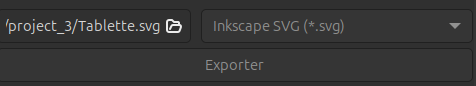

How To Make Anything
Project 1 : Glitch 3D
Step 1
Open file in Blender
Change point position, rotation… to make ski for exemple.
Step 2
Open modified file in https://hexed.it and change lot of line with [00;99].
Result
Project 2 : 3D Modeling
Step 1
Open Blender and create a cylinder.
Step 2
Rotate X by 90°.
Step 3
Lengthen the flute by increasing Z to 7.
Step 4
Switch to Edit Mode by pressing the TAB key,
then select the two main faces
and create an Inset by pressing the I key.
Step 5
Delete faces with Delete
Step 6
Switch back to Object Mode with TAB,
then add a Solidify modifier to our object.
Step 7
Create a new cylinder,
reduce its size and place it in place of one of the flute holes.
Step 8
Add a modifier array to the new cylinder.
Step 9
Add a Boolean modifier to the first cylinder.
Step 10
Apply all modifiers: Array, Solidify and Boolean.
Step 11
Create a new cylinder.
Step 12
Add a Boolean modifier to the main cylinder and apply it.
Step 13
Create a circle.
Step 14
Extrude and enlarge the circle.
Result File
Copy the new object in the style you want.
Step 16
Export the file as an stl file and open it in a printing program.
Step 17
Set print parameters, taking into account supports and object size.
Step 18
Start printing and make sure there are no start-up problems.
final result
When printing is complete, remove supports
and clean the equipment.
Project 3 : Cutting and prototyping
Step 1
Choose or create a pattern for the prototype.
Step 2
Open image in Gimp
and crop the desired strokes for the prototype in black,
removing background if necessary.
Step 3
Save image as png.
Step 4
Open image in Inkscape to export as svg.
Step 5
Open cutting software such as Cricut and set print parameters.
Step 6
Ensuring that the print run is successful.
Result
I've encountered printing problems with this first version,
so I'll have to make a new iteration to correct them.